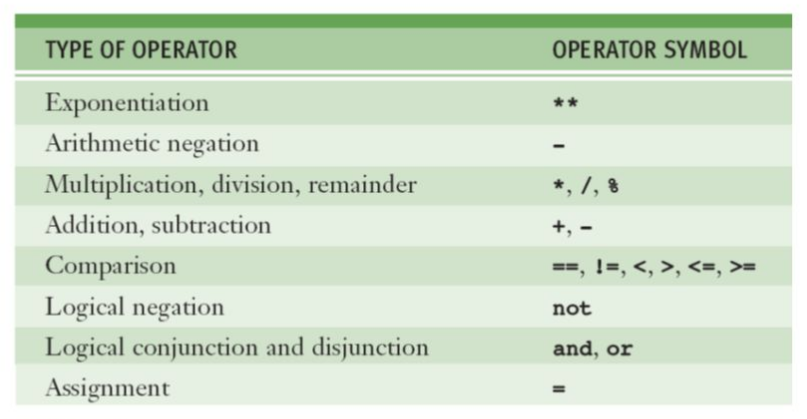
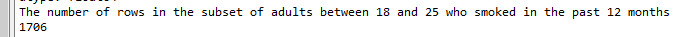
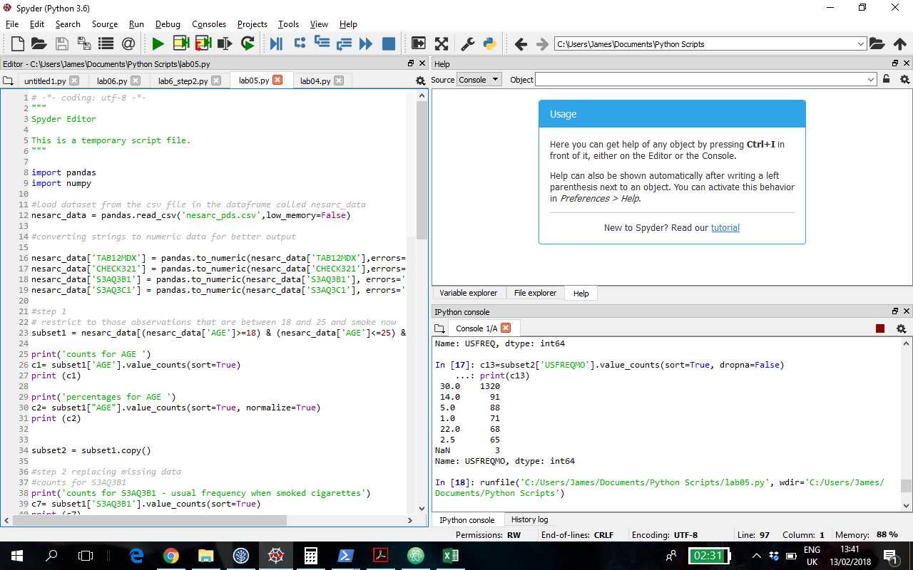
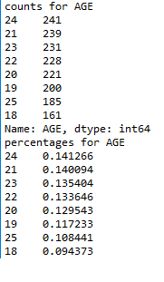
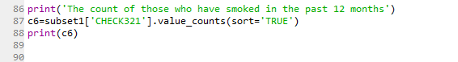
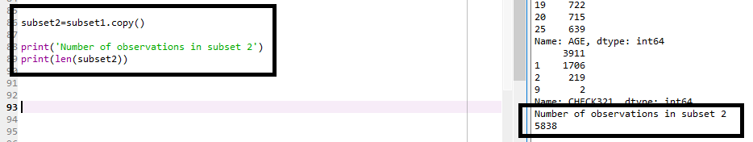
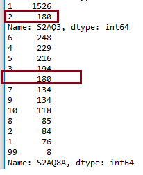
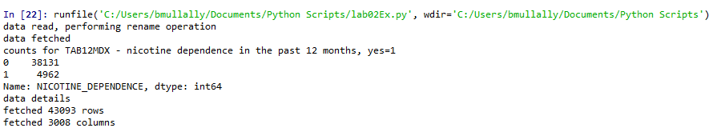

Refining research questions is essential in order to focus your analysis and discover the answer to a specific well thought out research question.
The solution python file for lab01 is available here
If you did not get the lab finished copy the code and save it to your working directory and run it to make sure it works.
As you learn more keep applying it to your continuous assessment.
Once you examine frequency distributions for your variables you need to decide whether you want to look at a subset of the data.
For example so far we have conducted frequency distributions on the entire data set or sample so our question concerning the association between smoking and nicotine dependence has been applied to the full sample.
We now can decide to examine only those adults who are 25 or younger and exclude all adults older than the age of 25. We also decide we want to focus on recent smokers, rather than individuals who smoked more than a year ago.
The research question has not changed. Rather, the question will be asked based on only a subset of the observations that are available in a specific dataset that will help us answer our research question.
To implement these decisions we will add additional code to our program.
First you should "save as" the Lab01.py file and call it Lab02.py still saving it in your working directory.
We will need to add logic statements that tell the program to include only those observations that will help you answer your research question.
Logic statements require one or more operations. Here are common operators used in Python, you should be familiar with these from the DataCamp or Codecademy Python course you started in Week 3.
Here are the common ones used in Python:

These include equal to, not equal to, less than, greater than, less than or equal to, and greater than or equal to.
Our code needs to include three logic statements in order to include in the specified observations (rows) from our dataset.
age >= 18 and age <=25 and smoker in last 12 months = yesTo do this we must place this logic in our Python code. First we must check in our code book to see what variable names we need to use for analysing age and recent smoker.
Page 5 in the code book shows us a variable called AGE that contains a number representing the age in years of each respondent. You may recall in Lab02 we used a variable called CHECK321 which was the cigarette smoking status where the value 1 indicated the respondent smoked within the last 12 months.
You can see that is it very important to have a well documented code book to support your analysis.
The code we need to add to our program is shown below:
print('The number of rows in the subset of adults between 18 and 25 that have smoked in the past 12 months')
subset1 = nesarc_data[(nesarc_data['AGE']>=18) & (nesarc_data['AGE']<=25) & (nesarc_data['CHECK321']=='1')]
print(len(subset1))If you remember in Lab04 we converted two variables to numbers using pandas.to_numeric. The logic statement above tests the value in CHECK321 is equal to the string '1'. If you converted CHECK321 to a number also then the logic statement will have to compare the CHECK321 variable value to the number 1
Remember we have to tell Python within each part of the logic statement what dataset we are working on and each variable name is held in quotation marks and square brackets. Each logic statement is enclosed in parenthesis and separated with in this case an 'and' symbol &. Finally the logic is contained with the square brackets.
Save and run the program. You should at the end of the console the following output:

Next write the code to generate distribution frequencies for the Age variable in the new subset1
Your code should look like this:

Your output like this:

Remember the output is only for the 1706 individuals between the ages of 18 and 25 who reported smoking in the past 12 months.
As a check to make sure you are working on the subset you can check the count for the variable CHECK321 and there should only be 1706 for the value 1.

It is often useful to make a copy of a dataframe it is easily done using the following code:
subset2=subset1.copy()Then you can use subset2. This can cause issues when dealing with datatypes that were converted however. Sometimes if you want to do comparisons on a variable in the copy the data conversion we did in lab04 on the nesarc_data does not copy over to the subset. It just means you have to apply that conversion again to the subset. (see the next step)
print('Number of observations in subset 2')
print(len(subset2))
Data Management involves making decisions about recording data in ways that help to answer our research questions.
The code book and frequency distributions often are the first port of call for helping to make these decisions. You will use both of these tools often because they reveal things about the data that will be helpful to you.
There are several steps commonly considered when conducting your data management. In some cases the dataset is very clean and the variables are already well managed that you do not need to do much if any data management.
In all datasets you should consider each possible decision you make about a dataset. This means you play an active role in understanding your data and assuring that you are asking your questions in an appropriate and meaningful way, as well as ensuring your treatment of the data and changes you make are documented and justified.
A first step to consider is whether or not you need to code out missing data.
For example the adult smoker from step1. In the Nesarc codebook you can see the response of 1 in variable S3AQ3B1 is for daily smoking. The data will often include response categories that don't help you answer your question even though they provide information. For instance, in this variable we have a response category unknown, coded as a nine.
For these responses, we don't know how much these individuals smoked and therefore we may not want to include them in our analysis.
Using the new data frame subset we created in the last step of this lab subset2 we are going to set responses of 9 for variable S3AQ3B1 to missing so that Python disregards these values. First we need make sure that the variable S3AQ3B1 in the subset2 is actually a number
subset2['S3AQ3B1']=pandas.to_numeric(subset2['S3AQ3B1'])if you do a frequency count on that variable you will see how many 9 values there are:
#counts for S3AQ3B1
print('counts for S3AQ3B1 - usual frequency when smoked cigarettes')
c7= subset2["S3AQ3B1"].value_counts(sort=True)
print (c7)You should see there are 3 values set to 9.
Then enter this code:
subset2['S3AQ3B1']=subset2['S3AQ3B1'].replace(9,numpy.nan)this replaces all the 9 values in that variable with NaN using the numpy library. Nan is how Python specifies missing data.
Remember when you use a variable you have to tell Python the data frame the variable is inside. So we have to include subset2 in the code.
Now we check to see if there are any values equal to 9 still remaining for that variable
print((subset2['S3AQ3B1']==9).sum())This should result in 0.
Next we can count how many are Nan or null
print(subset2['S3AQ3B1'].isnull().sum())or we do our frequency distribution again for that variable:
print('counts for S3AQ3B1 - usual frequency when smoked cigarettes')
c8= subset2['S3AQ3B1'].value_counts(sort=True, dropna=False)
print (c8)You should see that the 3 values that were originally 9 are now Nan.
Next consider another variable, S3AQ3C1 which holds values for the usual smoking quantity.
Look up the codebook for this variable. It is a value of between 1 and 98. A value of 99 indicates an unknown response. It is this value that we want to deal with, we want to set it to missing since it doesn't measure the number of cigarettes smoked, but rather indicates that we have no information on cigarette use for individuals coded as 99.
Complete the same steps as you did for S3AQ3B1.
You should see 9 observations that contained values 99 that are now set to Nan.
Examine each variable that is of interest to you to manage any missing values.
The next step is deciding whether or not you need to code in valid data that has been unnecessarily set to missing.
In some data sets, particularly those based on surveys, there are often skip patterns. Skip patterns are often created in surveys that allow participants to skip questions in which the answer can be logically determined. In this way, missing data on some questions might mean that we can reasonably recover valid information.
For the question, did you drink at least one alcoholic drink in the past 12 months (variable S2AQ3), many participants said no. These individuals would not need to be asked the question about how often they drank alcohol in the past 12 months, therefore they are empty.
Look up the codebook for both of these variables so you are familiar.
First you should count the frequencies for each variable so you can see how many are blanks.

For this variable we need to find out first what the blank is, is it null, is it an empty string or it is a space.
An easy way to check is to do a count on the number of observations that fit a criteria:
Here we can see 180 observations answered no to "did you drink at least one alcoholic drink in the past 12 months?" (value 2)
Then we can see that 180 observations answered blank to "How often they drank alcohol in the past 12 months?"
#first see if there are any nulls
print((subset2['S2AQ8A'].isnull()).sum())
#next see if there are any empty values
print((subset2['S2AQ8A']=="").sum())
#next see if there are any that contain a space
print((subset2['S2AQ8A']==" ").sum())You should see 180 returned for the last line of code, this tells us there are 180 observations that contain a space.
We need to replace this " " with NaN. So for the variable (S2AQ8A), how often did you drink alcohol in the past 12 months, it would be reasonable to code this as valid data (with the value 11) rather than missing for those saying that they have never drank alcohol.
Now we want to replace the blank data with Nan.
subset2['S2AQ8A']=subset2['S2AQ8A'].replace(' ', numpy.NaN)Now do the same count again for the full variable to see how many there are for each value:
c10=subset2['S2AQ8A'].value_counts(sort=True, dropna=False)
print(c10)
# or just count the nulls
print(subset2['S2AQ8A'].isnull().sum())Next we want to replace the nulls with an actual value, in this case 11 (here we are adding a category to the list) We need to include if S2AQ3 is not equal to 9 to our logic statement, in order to separate the no responses
subset2.loc[(subset2['S2AQ3']!=9) & (subset2['S2AQ8A'].isnull()),'S2AQ8A']=11print out the counts now for the complete variable to double check that you now have 180 observations for the value 11.
Another useful step in data management is to give your variables response codes that may be more logical than those they were originally given. For example, the variable usual smoking frequency S3AQ3B1 shows in the code book that lower values mean more smoking, and higher values means the respondents smoked less.
This coding sounds counterintuitive. We could choose to reverse code this variable so that higher values means more smoking, and lower values mean less smoking.
First we build a dictionary that recodes each value:
recode1= {1: 6, 2: 5, 3: 4, 4: 3, 5: 2, 6: 1}The format is value colon new value with commas separating each.
Next we use the map function to point to point to the recode1 dictionary and ask that these new codes apply to variable S3AQ3B1
subset2['USFREQ'] = subset2['S3AQ3B1'].map(recode1)In this case it is good practice to create a new variable to hold the newly coded values so that you do not get confused with the original data.
If however we wanted to recode using a more quantitative value rather than categorical (6=daily, 5=5 to 6 days per week). To do this we choose values that reasonable correspond to the number of times each individual smokes in a typical month.
Although these are estimates, they capture the quantitative nature of the measure and also keep individuals ordered in terms of the frequency with which they smoke. Our new variable is named USFREQMO which stands for the number of days per month.
recode2 = {1: 30, 2: 22, 3: 14, 4: 5, 5: 2.5, 6: 1}
subset2['USFREQMO'] = subset2['S3AQ3B1'].map(recode2)Print out the counts for each of the three variable to double check the frequencies are correct for S3AQ3B1, USFREQ, and USFREQMO
So this makes more sense, while it is a categorical value, we're actually getting more information out of it than we had originally been given.
Further Data Management
There are many ways to tidy up your dataframe.
Create a new python file, name it lab2Ex.py
Import pandas and numpy.
Just after the import statements we will list the columns that we want to use, to do this we create a dictionary to refer to when we rename and ultimately remove any other columns.
A dictionary are indexed by keys, which can be any immutable type. It is best to think of a dictionary as a set of key:value pairs, with the requirement that the keys are unique (within one dictionary). A pair of braces creates an empty dictionary {}.
Placing a comma-separated list of key:value pairs within the braces adds initial key:value pairs to the new dictionary as seen below:
# SETUP
#Columns that will be read from the CSV file and give them names that make sense
nesarc_dict = {
'TAB12MDX': 'NICOTINE_DEPENDENCE',
'CHECK321' : 'SMOKING_STATUS',
'S3AQ3B1' : 'FREQUENCY_OF_SMOKING',
'S3AQ3C1' : 'QUANTITY_SMOKED',
'S2AQ3': 'DRANK_ALCOHOL',
'S2AQ8A' : 'ALCOHOL_FREQUENCY'
}Next we need to read in the data from the csv filter
#LOAD DATA
nesarc_data = pandas.read_csv(
'nesarc_pds.csv',
low_memory=False
)Now we can rename the columns using the dictionary to map the old name to the new name.
We use a pandas function rename with the columns option as seen below:
# RENAME COLUMNS
print('data read, performing rename operation')
nesarc_data.rename(columns=nesarc_dict, inplace=True)
print('data fetched')
#TEST THE RENAMING
nesarc_data.columns
print('counts for TAB12MDX - nicotine dependence in the past 12 months, yes=1')
c1= nesarc_data["NICOTINE_DEPENDENCE"].value_counts(sort=True)
print (c1)You should now see the following if the renaming worked correctly:

Next we want to only keep in our nesarc dataframe the 6 columns we are working on in this lab.
#Update the dataframe to only contain the columns you do want to use in your analysis.
nesarc_data = pandas.DataFrame(nesarc_data, columns = nesarc_dict.values())
print('new column amount: ' + str(len(nesarc_data.columns)))This should show you an output of 6 for the number of columns.
Some useful properties and functions you can use on your dataframe:
nesarc_data.head
nesarc_data.tail
nesarc_data['NICOTINE_DEPENDENCE'].describe()
nesarc_data.dtypesApply what you have learned in this lab to your continuous assessment.